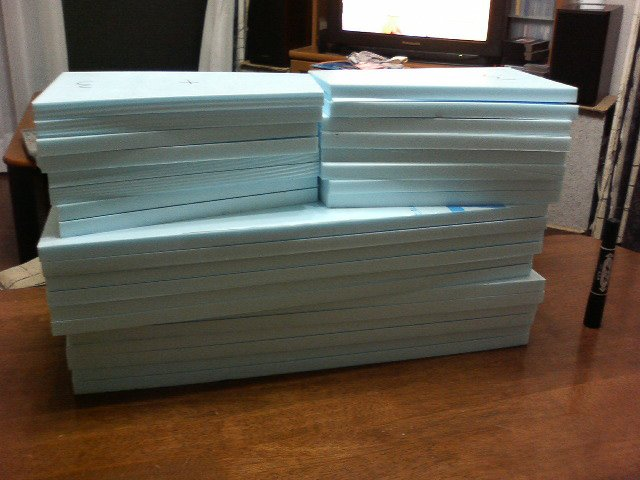
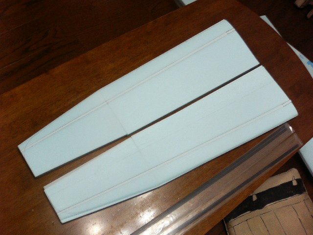
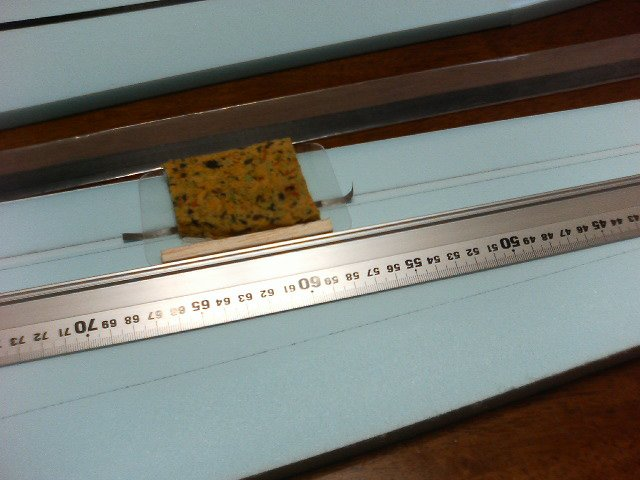
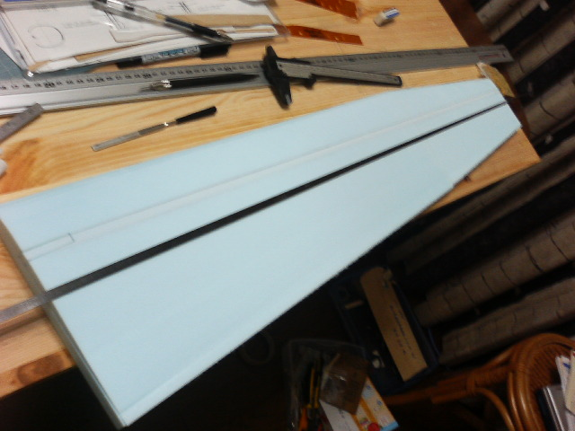
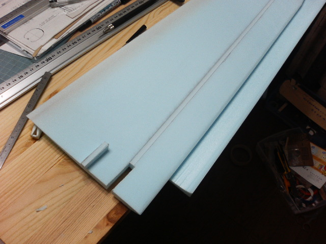
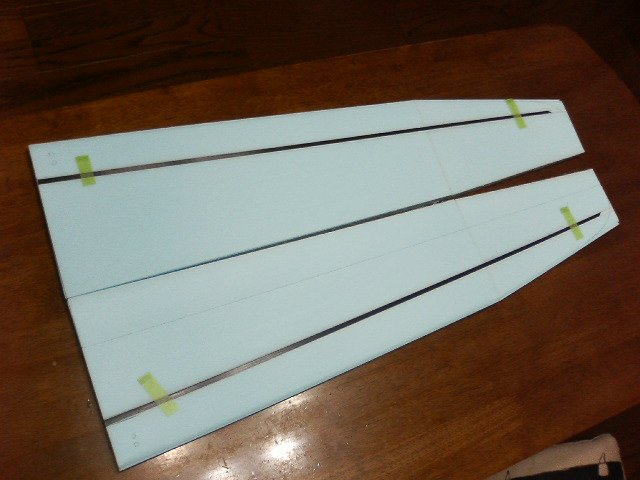
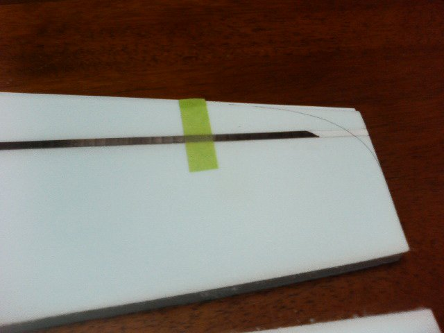

コアの準備
Ypsilonプロジェクトのは、SG2のコピーが目的なので、最終的にはケブラー貼りの主翼を作る予定ですが、
まずは、グラスを使って製作しています。ケブラーは単価が高く、普通に入手すると、グラスの5倍はします。
そんなものを練習に使うことはできません。いくつか練習で作成して、それから挑戦です。
さて主翼の製作です。
スタイロのかたどり
まず初めにスタイロを切り出すわけですが、平面形テンプレートでけがいて、熱線カッターで切り出します。
カッター自体の重さを利用してカットするのですが、言葉では表現しにくいです。そのうち写真をとって載せます。
切り出したら、切り口をサンディングして垂直を出しておきます。僕は、接合面しかサンディングしませんがぐるっと
一回りやった方がいいかもしれません。
コアの切り出し
コアの切り出しはいろいろなところで紹介されているので、説明はしません。また、日本でもCNCでカットしてくれる人が
いるようですので、入手できるのであれば、そちらの方が楽かと。
でもやっぱり自作でしょうという場合、テンプレートと半自動カッターがあれば、あとは、何枚か(も？)切り出して練習すれば、そんなにおそれる
必要はありません。僕は、10セットくらい練習して、その後10セットくらい作っていますが、現状では2枚に1枚くらいは満足できるできで、
残りの半分は要修正で、半分は修正不能という感じ。ですので、5枚のうち4枚くらいは使えるものが出来上がります。
気をつけているところは
- 平面形の切り出しははいいかげんではだめ
- 熱線は1回切るごとにきれいにする。熱したまま布などでふき取る
- 熱線のテンションは可能な限りつよく、下に押し付ける力はできるだけ弱く
- 切り出しのときの重石は重めに均一に。僕は4KGくらいのせています
といったところです。少々波打ったりしてもサンディングで修正可能です。

これは、切り出した後のコアです。3セット分＋外翼だけもう1セット分あります。
僕は、切り出したコアはなるべく素手で触らないようにしています。手の油などで、クロスの密着が悪くなるのを
防ぐためです。扱うときには手袋をしています。
コアの接合
切り出したコアの内翼と外翼を3M77を使ってくっつけます。ネガティブシェルもくっつけます。
まず、切り出したコアをネガティブシェルにはさんだまま、接合面に3M77を多めに吹き付けます。内翼･外翼両側に吹き付けて
手にくっつかなくなるまで乾かします。その後、コア/ネガティブシェルそれぞれずれないよう慎重に丁寧にくっつけます。

切り出したコアを接合したものです。すでに、スパーの溝が彫ってあったりカンザシのところの切り欠きがしてあったりしますが、
平面形は手を入れていません。下にはネガティブシェルが敷いてあります。
スパーの溝掘り
SG2の主翼はコアを整形する前にスパーを取り付けます。
スパーキャップの溝堀りの作業のために、溝を掘るあたりだけサンディングします。コアのサンディングは、
表面のケバが取る程度に軽くやるだけという方法があるようですが、クロスの接着
のことを考えると、すべすべになるまでサンディングしたほうがいいと思っています。でも、あまり削りすぎて翼型を崩さないようにね。
まずは、スパーの補強(Webret)を埋め込むための切り込みを入れます。木片に折り取ったカッターの刃を先が3mmちょっと出るように
貼り付けたものを使って、SGの図面どおりに切ります。このとき、翼端部は前後にずれているのに注意します。
溝掘りに使うツールです。

材料は、マイラー(0.3mmPETシート)と5mm角ヒノキ棒・スポンジ・4mm幅に切った紙やすり・両面テープです。
手元にあったのでマイラーを使ってますが、PPなどでいいと思います。張りがあったほうが作業がしやすいので、厚手のものがいいでしょう。
スポンジは、写真のものは柔らかいものを使っていますが、力が均等にかからなくて使いにくかったので、今は防振用として売っている
5mm厚のゴムシートを使っています。
マイラーを70mm×120mmに切って、長辺にガイドのヒノキ棒を貼り付けます。貼り付けるときにマイラーがはみ出さないように。
ヒノキ棒をつけた側にマイラーより少し小さく切ったスポンジを貼ります。
最後に4mm幅に切った紙やすりを貼るわけですが、
- ガイドのヒノキ棒と並行になるように。
貼るときのガイドとして、アルミアングルを使っています。
- 溝の深さは両面テープの重ね貼りで調整する。
使っているスパーは0.4mm弱の厚みで、両面テープ2枚重ねでちょうど良い感じでした。
- 紙やすりはマイラーより長くして、両端をスポンジ側にテープで止める。
こうしておかないと、作業中にはがれた紙やすりでコアを傷つけてしまいます。
定規にガイドをあてて削っていきます。最初の作業では4mm幅の溝ができます。翼根は表が8mm・裏が6mm
なので、定規をずらしてさらに削っていきます。


やってみればそれほど難しい作業ではないのですが、ぴったりの深さの溝を掘るのは練習が必要です。削ったときはぴったりの
ようでも、バギングしてみると深すぎたというようなことがよくあります。
カンザシ用切り欠きを作る
カンザシをつけるための切り欠きを作ります。バギングした後でほじくって穴を開けるのではきれいな穴が開かないので、このタイミングで
切り欠いておきます。切り欠いた残りの小片はバギングのときにははめておくので、一発できれいに切り取れるように、気合を入れて作業します。
もう一つ注意が必要なのは、左右翼の切り欠きの位置を合わせることです。合っていないと後で悲しいことになります。

スパーの取り付け
補強(Webret)とスパーをコアに貼り付けます。
接着にはエポキシ 5052を使います。まずはWebretにエポキシを塗りつけて、切り込みに差し込みます。このとき、あまり強く押すと
もぐりこんでしまい、取り出せなくなってしまうので、少しだけ頭が出ている様にします。
はみ出したエポキシはふき取りますが、その前に溝に行き渡るようにへらでのばしてからふき取ります。スパーの接着に必要な
エポキシは極少量なので、全部ふき取るつもりでふき取った方がきれいにでき上がります。
スパーにもエポキシを塗ってふき取り、溝にはめ込みます。出っ張っている補強を押し込むように押さえつけて、テープで仮止めします。
両側準備できたらバギングします。写真はバギング後です。


コアの整形
スパーキャップがつくとコアがしっかりするので取り扱いが簡単になります。
使用するサンディングブロックは、手のひらより少し大きいくらいの物で、240番と仕上げ用に400番を使います。
まずは上下面です。スパーをつけた部分のエポキシのはみだしなどを取り除いて、面全体をサンディングします。
カットしたときのケバを取るときはサンディングブロックについたかすをこまめに取り除きながら作業します。
そうしないとかすがコアを傷つけてしまいます。
次に、翼端の平面形を切り出して、翼端・前縁を整形します。形の確認は、テンプレートを使って
するのがいいのでしょうけれど、全ての場所のテンプレートを作るわけにはいかないので
目視での確認になりますが、直射日光や裸電球などの点光源と板をつかって影を作って確認すると
楽です。
最後に後縁の整形です。
僕のテンプレートは、後縁は1mmの厚みを残すようになっています。翼型どおりのテンプレートを作ってしまうと
場所による融け方の違いで後縁がまっすぐになりませんでした。
初めにトリミングします。コアは主翼の平面形どおりになっていますが、最終的に後縁は2mmの幅でコアが入っていないように
します。よって、まずはコアを2mm切り取ります。
あとは、後縁の研ぎ出しです。気合を入れて細心の注意をはらってできるかぎり薄く仕上げます。
最後の仕上げに、ついている削りかすをブロアで吹き飛ばします。
これでコアの準備は出来上がりです。